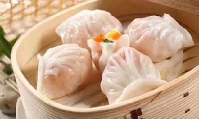
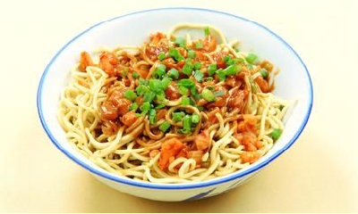
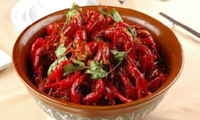
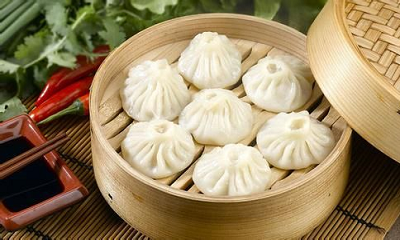
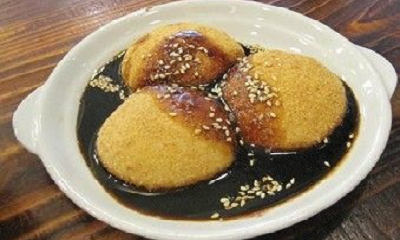
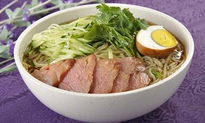
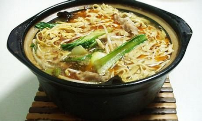
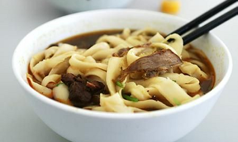
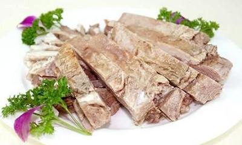

- 
广东：虾饺
虾饺是广东省的汉族传统小吃，起源于广州郊外靠近河涌集市的茶居。那些地方盛产鱼虾，茶居师傅再配上猪肉、竹笋，制成肉馅。当时虾饺的外皮选用粘(大)米粉，皮质较厚，但由于鲜虾味美，很快流传开来。详情>>
- 
湖北：热干面
热干面是湖北省武汉市的汉族特色小吃，在湖北很多地方都十分受欢迎。随着湖北人在其他省市地人口增多，武汉热干面也在许多地方都能见到，是诸多人喜欢的面食之一。详情>>
- 
湖南：口味虾
口味虾又叫长沙口味虾、麻辣小龙虾、香辣小龙虾等，是湖南省著名的汉族小吃，以小龙虾制成，口味辣鲜香，色泽红亮，质地滑嫩，滋味香辣。20世纪末开始传遍全国，成为人们夏夜街边啤酒摊的经典小吃。详情>>
- 
上海：南翔小笼包
南翔小笼馒头，是上海嘉定区南翔镇的汉族传统名小吃。已有100多年历史。该品素以皮薄、馅多、卤重、味鲜而闻名，是深受国内外顾客喜爱的风味小吃之一 。详情>>
- 
四川：三大炮
三大炮是著名的四川地区汉族特色小吃，主要由糯米制成，分为“铁炮”，“火炮”，“枪炮”，故名总称“三大炮”。吃时配以“老鹰茶”，别有风味。三大炮有香甜可口、不腻不粘又化渣的特点，且价廉物美。详情>>
- 
吉林：长春朝鲜冷面
延边朝鲜族喜吃冷面。冷面现今在国内很有名气，冷面的主料为白面，荞麦面和淀粉。做冷面时，先把和好的面用专用机械压入锅中，煮熟后捞出，用冷水冷却。后加牛肉汤或鸡肉汤，配以泡菜，辣椒，牛肉片，鸡肉丸子，苹果片，鸡蛋等佐料，即可食用。详情>>
- 
云南：过桥米线
过桥米线是云南滇南地区特有的汉族小吃，属滇菜系。过桥米线起源于蒙自地区。过桥米线汤是用大骨、老母鸡、云南宣威火腿经长时间熬煮而成的。详情>>
- 
山西：刀削面
刀削面，是山西的汉族传统面食，为“中国十大面条”之一 ，流行于北方。操作过程：将面粉和成团块状，左手举面团，右手拿弧形刀，将面一片一片地削到开水锅内，煮熟后捞出，加入臊子、调料食用，以山西大同刀削面最为著名。 详情>>
- 
宁夏：清蒸羊羔肉
宁夏羊羔肉细嫩鲜美，没有膻味。羊羔肉最好选用胸叉、上脊骨部位，剁成长方形条，用清凉水洗净，摆在碗内，放上生姜、大葱、大蒜;再放上几粒生花椒，上笼蒸30分钟左右;然后扣至汤盘内上桌，配以醋、蒜汁、盐等调料佐食。详情>>